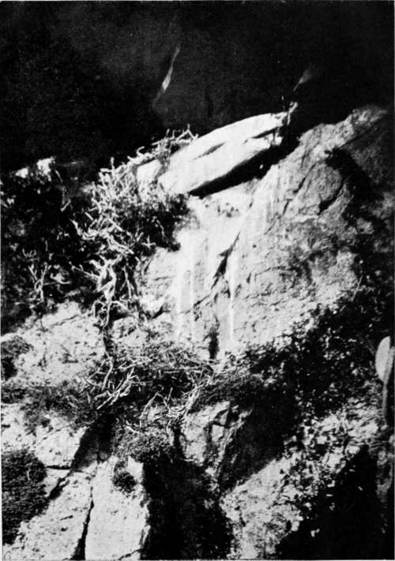
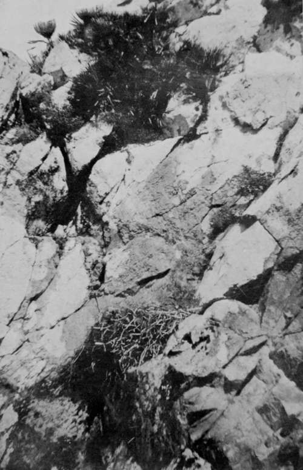

Birds'-Nesting In Spain. Part 5
Description
This section is from the book "Bird-Hunting Through Wild Europe", by R. B. Lodge. Also available from Amazon: Bird-Hunting Through Wild Europe.
Birds'-Nesting In Spain. Part 5
Only a few yards from this nest I had put off from a cave higher up a fine Egyptian Vulture, and could see the outside sticks of her nest projecting over the edge. I tried hard to climb to this nest, which was not more than sixty feet up, but could not manage more than half-way, and there stuck, so I had to give it up.
All that night after our return I lay awake considering how I could master this difficult bit of rock-face ; and at last I thought I had hit upon a feasible idea. The next day, therefore, we hired some horses and rode back, provided with a coil of rope and the nesting-stick before described. The idea was for me to climb up as far as I could, and then, by placing the nesting-stick extended to its full length, about ten feet, in the bight of the rope, to hitch it over a projecting rock, haul myself up, and repeat the process until I reached the nest. The descent would be easy with the doubled rope. It worked all right at first, and I reached a spot much higher than before, and not very far from the nest; but from this spot I could ascend no farther. It was impossible to find any corner on to which to hitch the rope. What corners there were were inclined the wrong way, and on the slightest pull the rope slipped back. So once more I had to give it up and descend empty-handed. All I could do was to photograph the rock from below and make some more exposures of the Griffon, which proved quite as obliging as on the previous day.
In the meantime we had set an old Spaniard to work, making inquiries among the goatherds, and offering a small reward for news of any Eagles' nests. One day he told us he had information of one to which he could conduct us when we liked. Accordingly we started off next day with him and another Spaniard, who had hired for us a small donkey with panniers, in which we could stow the cameras and enough food and wine for a day's work.
We found the heat too terrific and the distances too great to carry everything ourselves over such rough ground. Even with this extra assistance it was a good day's work, what with the long walk and the climbing and clambering about the rocks ; so much so that our guide-as we both refused to do so-for the greater part of the return journey was glad to mount the poor little donkey, which made no bother about carrying him as well as her proper load.
Nest Of Egyptian Vulture (Percxopterus Neophron)
The Eagle's nest was situated in an isolated rocky crag, perhaps 100 feet in height, in the middle of a plain. As we approached, guided by two goatherds whose flocks were grazing near by, a Bonelli's Eagle flew off, revealing her nest high up near the summit. Making a long detour by means of a narrow, slippery goat-track, we came out at the back, and then clambered along the top from one great boulder to another until we were immediately over the nest. Then craning our necks over the edge we could see below us a great, flat nest in which was a large, single egg.
I was much relieved at the sight; first, because it was a very late date for eggs of Bonelli's Eagle, and, secondly, because I had somewhat rashly undertaken, if there should be an egg, to take it myself, and Bonelli's Eagle has the worst possible reputation for building in inaccessible situations-1 places that make one's flesh creep to look at,' says Chapman in Wild Spain-and I was prepared for a much more difficult task.
After the Alpine rope had been securely knotted round my chest, my three companions, bracing themselves firmly one above the other, lowered me over the edge until I stood upright in the nest. Holding up the egg to show to the goatherds who had remained below, I gave the signal to the men above, and was quickly hauled up with the egg safe in my pocket. It was very long and pointed, a dirty white with rusty-coloured stains, and proved to be addled. This was fortunate, however, for us ; for, had things gone well with it, there should by this date (April 20) have been a half-grown Eaglet in the nest.1
While eating our lunch under some small trees near the foot of this crag we found that a Goldfinch was quietly sitting on her nest just over our heads. There was another nest in a neighbouring tree. The Gilguero is exceedingly common throughout Spain, perhaps on account of the abundance of its favourite food, the thistle. Later we discovered numbers of them nesting in orange-trees. These Spanish Goldfinches are small, but very brightly coloured.
After this we proceeded towards the coast in search of the nest of a Golden Eagle, Aquila real, as the Spaniards call it, of which we had tidings from the goatherds. Following our guide, after we had hobbled the donkey at the nearest available spot, we clambered for some distance over a series of huge boulders, by degrees getting higher and higher, until we arrived at the verge of a tremendous cliff. I had carried a pair of alparagatas in my bag, and put them on as soon as there was any climbing to do. These are the canvas rope-soled shoes so common in Spain, and are by far the best things I know for rock-work, much better than the raw hide opankis I used later in the Balkans. In them one can go in ease and comfort over places where I, for one, would have to go down on hands and knees if clad in ordinary boots. Our old guide skipped about like an ancient billy-goat, and we were able to follow him without any difficulty.
1 In the following year a friend found in this same nest a young Golden Eagle in the middle of April.
Nest Of Bonelli's Eagle (Aquila Bonellii)
Continue to: